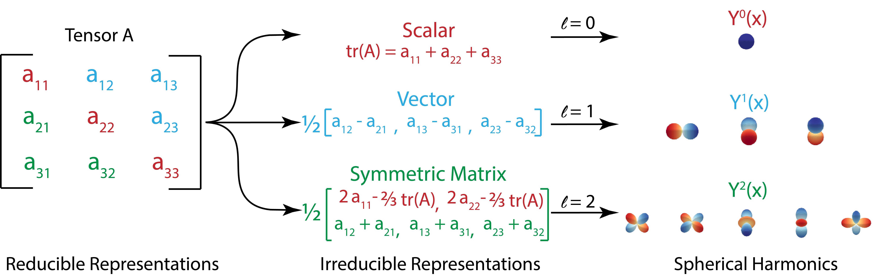

Irreducible representations
Contents
Irreducible representations#
 |
|---|
Fig.1 - Transformation to irreducible representations. |
In this section, we will give the definition of irreducible representations and showcase how the reducible and irreducible representations of the same mathematical object can be transfered interchangably in the context of E(3)-equivariant neural networks.
By definition, an irreducible representation is a representation that does not contain a smaller representation in it. For example, there is no nontrivial projector \(P \in \mathcal{R}^{q\times d}\) such that the function \(g \to PD(g)P^t\) is a representation. The irreducible representations of \(SO(3)\) are indexed by the integers \(l=0,1,2,\dots\), and the \(l\)-irrep is of dimension \(2l+1\). For example, \(irrep(l=0) \in \mathcal{R}^1\) corresponds to \(\textit{scalars}\), \(irrep(l=1) \in \mathcal{R}^3\) corresponds to \(\textit{vectors}\), and \(irrep(l=2) \in \mathcal{R}^5\) is the decomposition of a trace-less symmetric rank 2 tensor. A more detailed discussion of irreducible representations can be found here [\cite{E3NN paper + ref.21}].
Here, we will use the example of a random rank-2 tensor \(A \in \mathcal{R}^{3\times 3}\), and show how we can decompose tensor \(A\) into irreducible representations of \(l=0,1,2\): namely, a scalar corresponding to the tensor trace \(tr(A)\), a pseudovector corresponding to the anti-symmetric component, and a 5 component irrep corresponding to the trace-less component of the symmetric component of tensor \(A\).
First, we can decompose tensor \(A\) into a symmetric part \(A_{sym}\) and a trace-less anti-symmetric part \(A_{anti-sym}\):
where,
and we can further decouple the symmetric part \(A_{sym}\) into a identity matrix multiplied by the trace \(tr(A)\) and a traceless symmetric matrix \(A^\prime_{sym}\):
Such that overall, tensor \(A\) can be decomposed into the following terms:
and if we write it element-wise:
Notice that each of the three parts of the two equations above are preserved by rotations, and thus we have successfully decomposed a rank-2 tensor into irreducible representations of \(l=0,1,2\), in the sense that:
In e3nn, the irreducible representation of a rank-2 tensor can be written in simplified format as “1x0e + 1x1o + 1x2o”. Similar to the example of rank-2 tensor shown above, higher-order mathematical objects can also be decomposed into irreducible representations, as shown in the e3nn paper [\cite].
The fact that irreducible representations can be obtained by decomposing arbitrary mathematical objects sets the foundation of E(3)-equivariant neural networks, where all input and output data are used in the form of irreducible representation class called Irrep.